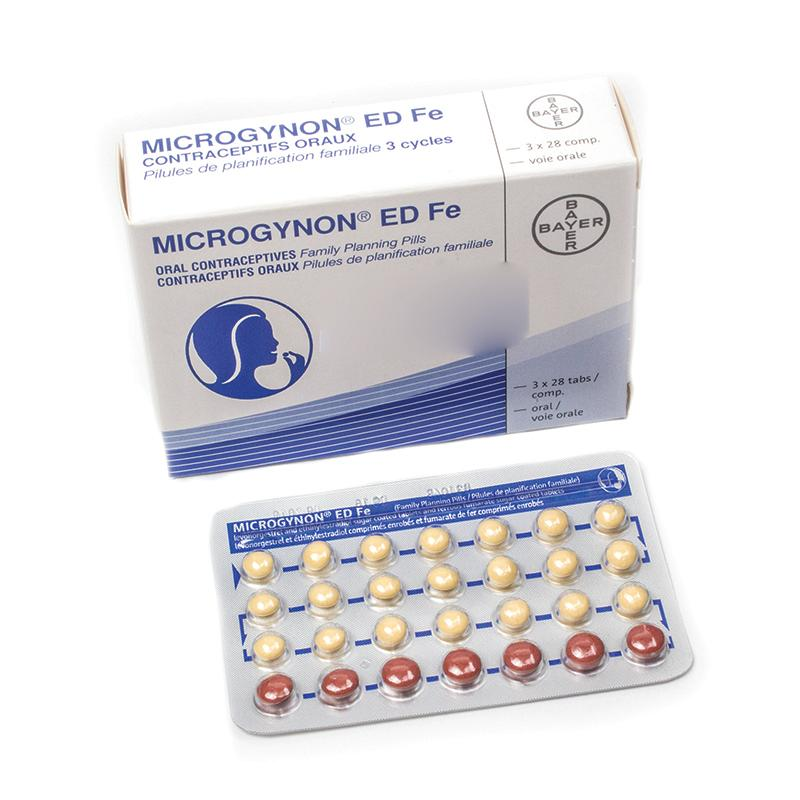
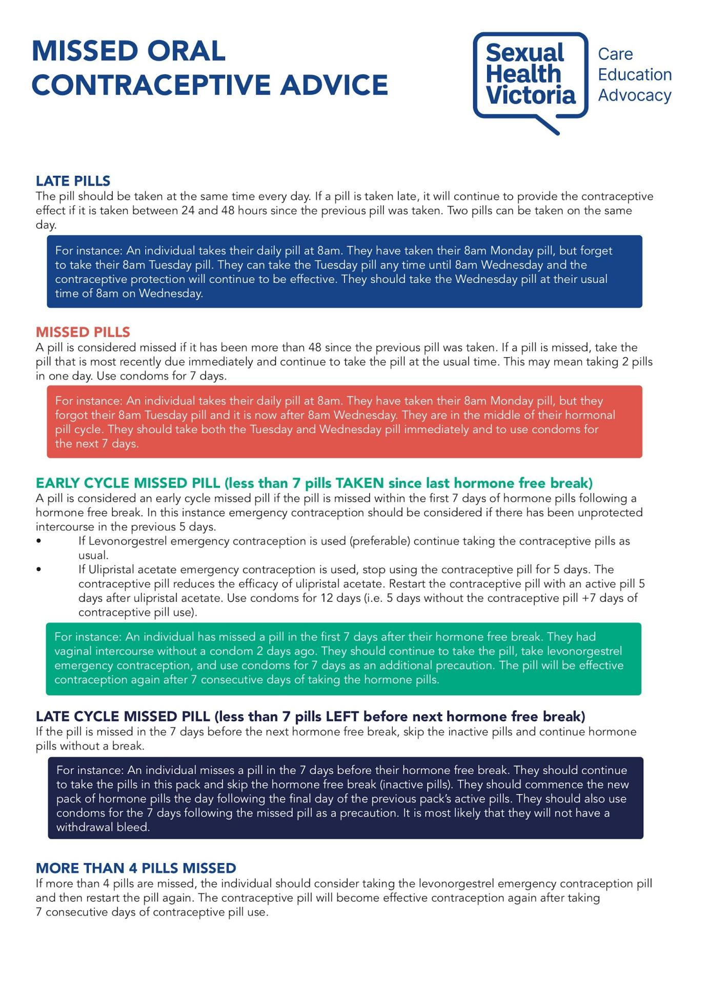
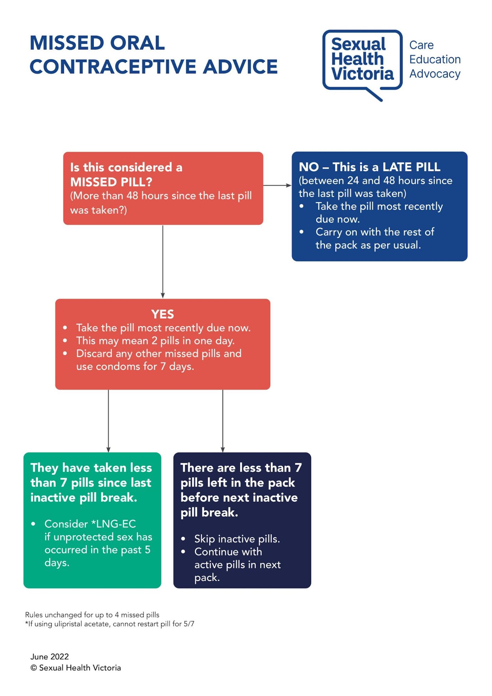

OCP COUNSELLING
1. First-Choice Contraception
- Australian guidelines: COCPs are first line.
- POPs are not first line because:
- Less effective than COCPs.
- Narrow window for missed doses → more challenging for users.
- Less effective than COCPs.
- Use COCPs unless there is an estrogen contraindication.
2. How Combined Oral Contraception Work
- Suppress ovulation — the egg is not released.
- Thicken cervical mucus — sperm cannot travel to fertilize.
3. Contraindications (Most Important Section)
Absolute Contraindications of COCPs
MNEMONIC : BANKS HAVE VARIOUS SCHEMES TO PROVIDE HOME LOANS DURING MAY
B BREAST CANCER (KNOWN/SUSPECTED)
H HYPERTRIGLYCERIDEMIA
V VAGINAL BLEEDING (UNDIAGNOSED)
S SMOKERS > 35 YRS (>15 cigarettes/day)
T THROMBOPHELEBITIS or THROMBOEMBOLISM
Known or suspected case of thromboembolism or family history of idiopathic thromboembolism in parent or sibling or h/o CVA/MI, or conditions predisposing to it (Risk factor for thromboembolism, e.g., malignancy, lupus anticoagulant present, prolonged immobility due to trauma or surgery → absolute contraindication).
P PREGNANCY or PERIPARTUM CARDIOMYOPATHY
H HYPERTENSION (160/100 mmHg)
medically controlled hypertension, in a female who is nonsmoker, of any age: Not a C/I
L LIVER FUNCTION IMPAIRED/ LIVER CANCER/ ACUTE OR CHRONIC CHOLESTATIC LIVER DISEASE
D DIABETES MELLITUS WITH VASCULOPATHY
M MIGRAINE WITH AURA
Other Important Contraindications Mentioned
- First 6 weeks postpartum — do not start COCPs in first 6 weeks postpartum; start at 6-week check.
Relative Contraindications
- Family history of clotting — needs specialist input; not absolute contraindication.
- Migraines without aura — significant but may require assessment.
- Gallbladder disease.
- Diabetes with complications (nephropathy, retinopathy).
- BMI> 35, If family
- For exam purposes, memorise the absolute/level 4 contraindications.
4. Benefits / Indications of COCPs
- Improves heavy menstrual bleeding (menorrhagia) — management option (though Mirena more effective).
- Improves dysmenorrhea (painful periods).
- Useful in PCOS — regulates hormonal cycle.
- Useful in endometriosis — improves symptoms.
- Reduces risk of:
- Endometrial cancer
- Ovarian cancer
- Bowel cancer
- Endometrial cancer
5. Risks and Side Effects
Minor (Common) Side Effects
- Headache
- Nausea (relevant for vomiting guidance)
- Breast tenderness
- Bloating
- Mood changes
- Reduced libido
- Weight gain — often described as puffiness/fluid retention rather than true fat gain
Major / Significant Risks
- Increased risk of clotting (venous thromboembolism)
- Increased cardiovascular disease risk — stroke, myocardial infarction
- Increased risk of cervical cancer
- Increased risk of breast cancer
- Potential increase in blood pressure — check BP prior to starting and monitor
6. Dosing, Types, and Preferred Preparations
- COCPs contain estrogen + progesterone.
- Estrogen dose varies (low / medium / high).
- Higher estrogen → higher contraceptive effect but greater clot risk; avoid high-dose unless indicated.
- Higher estrogen → higher contraceptive effect but greater clot risk; avoid high-dose unless indicated.
- Usual first-line estrogen dose: estradiol 20 or 30 micrograms.
- Preferred progesterone: levonorgestrel (first choice).
- Brand to remember (exam-friendly): Microgynon (contains estradiol + levonorgestrel) — available as 20, 30, 50 mcg estrogen formulations.
- 20 mcg formulations → more breakthrough bleeding but lower clot risk.
- Anti-androgenic progestogens (e.g., in Yasmin/Yaz) used when OCP is given for acne (hyperandrogenism).
7. When to Start COCP
Therapeutic guideline: can start any time in cycle; if early pregnancy cannot be excluded, do a pregnancy test 3–4 weeks after starting or 3 weeks if no further unprotected sex occurred in first week of use
- started on day 1 to 5 of a regular menstrual cycle
- started less than 21 days postpartum
- started within 5 days of an abortion
- switching between combined oral contraceptive formulations or the vaginal ring; begin the new pill packet on a hormone pill or insert the vaginal ring at any time but no longer than 24 hours after the end of the hormone-free interval
- switching from an etonogestrel implant or depot medroxyprogesterone injection
- switching from a copper IUD during days 1 to 5 of a regular menstrual cycle.
Important counseling point: COCPs take 7 days to work → use condoms for first 7 days after starting.
8. Pill Pack Structure
- 21 active hormonal pills + 7 inactive pills.
- Active pills taken for 21 days → then 7 inactive pills → withdrawal bleed occurs during inactive pills → start next pack.

9. Missed Pill Guidance


10. Vomiting and Pill Absorption
- If vomiting occurs >2 hours after taking pill → pill has likely been absorbed → no extra action.
- If vomiting occurs <2 hours, repeat an active pill (because the pill likely not absorbed).
11. Stopping / Skipping Periods (Extended Use preferred )
- A monthly withdrawal bleed is not medically necessary. It is safe to adjust how you use the pill or vaginal ring to reduce or stop bleeding.
- This is especially useful for people who have painful periods, endometriosis, heavy bleeding, early ovarian insufficiency, or symptoms during the hormone-free week.
Ways to Use the Pill or Ring to Reduce Bleeding
- Continuous use: Keep taking active pills or keep the ring in without any break.
- Extended use: Take active pills/use the ring for 9–12 weeks, then take a 4–7 day break.
- Shorter breaks: Take 21 active days + a 4-day break, or build a 4-day break into an extended schedule.
Special Pill Packs Designed for This
- Extended-cycle packs: 84 active pills + 7 days of low-dose oestrogen
→ bleed only every 3 months (e.g., Seasonique). - Shorter-break packs:
- 24 active + 4 inactive pills (e.g., Yaz, Zoely).
- Quadriphasic pill with 2 inactive pills (e.g., Qlaira).
- 24 active + 4 inactive pills (e.g., Yaz, Zoely).
12. Special Situation — Epilepsy & Enzyme-Inducing Medications
- Many anti-epileptic drugs are enzyme-inducing → these increase estrogen metabolism, reducing contraceptive effectiveness.
- Do not stop anti-epileptic medication.
- Options to counsel:
- Increase estrogen dose (e.g., choose 50 mcg estradiol) to overcome enzyme induction.
- Or offer non-estrogen options: Mirena, implant, progesterone-only methods.
- Increase estrogen dose (e.g., choose 50 mcg estradiol) to overcome enzyme induction.
- Explain to patient that enzyme-inducing drugs affect estrogen component; provide alternatives.
13. Legal Capacity / Mature Minor (Gillick Competence)
- Legal age of consent for treatment in Australia: commonly 16–17 years (varies by state).
- Mature minor / Gillick competence: assess decision-making capacity rather than age alone.
- Criteria: ability to understand, retain, and communicate relevant information.
- Criteria: ability to understand, retain, and communicate relevant information.
- Under 13 → generally no capacity to consent.
- 14–15 → grey zone; assess for mature minor status.
- 16–17 → usually can consent but confirm understanding.
- If mature minor consents and objects to parental involvement, you may not need to inform parents.
- OSCE step: ask the young person to repeat back their understanding: “Did you understand? Tell me what you understood about how to take the pill and what to do if you forget.”
14. Emergency Contraception
- levonorgestrel 1.5 mg orally, as a single dose taken as soon as possible and within 96 hours (4 days) of unprotected sexual
- ulipristal 30 mg orally, as a single dose taken as soon as possible and within 120 hours (5 days) of unprotected sexual intercourse.
15. Final Summary
- COCPs = first line.
- Common regimen: estradiol + levonorgestrel (e.g., Microgynon 20/30/50).
- Mechanism: suppress ovulation + thicken cervical mucus.
- Key focus: identify contraindications (cardiovascular disease(IHD,stroke, congenital heart disease, vulvulr disease), clotting history(hx of clots, family hx of clots, +AP.ab, surgery, immobilization) liver disease(cirrohisis, liver mass), migraine with aura, postpartum <6 weeks, smokers >35 years and smoking greater than 15 cigarettes, hypertension).
- Advantages: reduces bleeding, pain, and some cancer risks.
- Risks: clotting, cardiovascular events, increased breast/cervical cancer risk, raised BP.
- Pill pack: 21 active + 7 inactive; start day 1–5; takes 7 days to work → condoms for 7 days.
- Missed pill rules: <24 hrs → take missed pill; >24 hrs → take missed pill + condoms 7 days; early-pack missed + unprotected sex → emergency contraception.
- Vomiting <2 hrs → repeat pill. More than 2 hours> its fine
- Epilepsy: enzyme-inducing drugs → consider higher estrogen dose or alternative methods (Mirena, implant, progestogen-only).
Your next patient is a 18 year old girl who has presented to your General Practice requesting contraception pills.
Task:
- Take history from the patient
- Counsel the patient regarding oral contraception
HISTORY TAKING
1. Opening
- Start with an open-ended question: “How can I help you?”
- Patient says she wants contraception pills.
2. Explore Knowledge and Reason for Request
- Ask: “Can you tell me how much you know about contraception pills?”
- Ask: “Why do you want to start contraception pills?”
- Looking for the indication (acne, contraception, friends use them, etc.).
- Looking for the indication (acne, contraception, friends use them, etc.).
3. Permission to Ask Questions
- “I’ll be asking you a few questions first. Is that okay?”
4. Five Ps
P1 – Period History
- When was your last menstrual period?
- Are periods regular or irregular?
- Any heavy bleeds?
- Any excessive severe pain?
(Looking for dysmenorrhea and menorrhagia.)
P2 – Partner
- Are you sexually active?
- Explore safe sex / condoms. No need to go deeper.
P3 – Previous Contraception
- Have you used any contraceptions before?
P4 – Pregnancy
- Skipped in 16–18-year-olds.
- For older women, would explore pregnancy.
P5 – Pap/Cervical Screening
- Not applicable for 18-year-old.
- Instead ask: “Have you received your Gardasil vaccination?”
5. Contraindications (Key Point – Must Not Miss)
Ask about:
- H/O Heart disease, heart attacks, high blood pressure
- H/O Stroke
- H/O Clots in legs/lungs (PE, DVT)
- Family history of clotting
- Liver disease or liver mass
- Migraine or recurrent headaches
- Smoking
- Previous history of cancers (especially breast cancers)
6. Additional Questions
- Weight: “Are you overweight currently?”
- Medications & past medical history
(Example: anti-epileptics, history of seizures.)
PHYSICAL EXAMINATION (KEY POINTS)
- General appearance: BMI
- Vital signs: check blood pressure
- Cardiovascular exam: e.g., if murmur → no contraception today
- Abdomen: liver examination
- Pelvic exam: not required
- Breast exam: only if concerns (lumps, previous surgery)
COUNSELLING FRAMEWORK
“As you have no contraindications I can prescribe you the pills however we need to discuss few things before I prescribe you the medication”
1. What the Pill Is
- I am prescribing u Combined oral contraception pills
- It Contain two hormones:
- Estrogen
- Progesterone
- Estrogen
- Hence called “combined” pills.
2. How It Works
- These provide protection by:
- Stops the release of the egg cells from the ovaries
- Thickens secretions at the mouth/entry of the womb
(thickening of cervical mucus)
3. Advantages
- Regulates cycle
- Controls bleeding
- Regulates pain of periods
- Provides contraception
4. Risks & Problems
Minor Side Effects
- Breast tenderness / breast pain
- Bloating
- Mood swings
- Nausea
- Headaches
- Weight gain
Significant Risks (Key Point)
Must tell patient:
- Can increase risk of clots
- Can increase risk of heart attack and strokes
- Can increase blood pressure
- Can slightly increase risk of breast cancer
(These risks are rare.)
5. Choosing the Pill – only if Epilepsy Context
- As patient is on epilepsy medication (topiramate, carbamazepine, etc.):
“as u r on anti epilepsy medicine, I need to prescribe you a higher than usual dose of estrogen.” - Example: I will prescribe u Microgynon 30 or 50 (higher than 20).
6. How to Use the Pill
- U have 28 pills in pack
- 21 active pills (hormonal)
- 7 inactive/sugar pills
- 21 active pills (hormonal)
Starting the Pill
- Start day 1 to day 5 of the period.
- It Takes 7 days to work → Use condoms for first 7 days.
Inactive Pills
- When u get to last 7 pills (inactive), you get your period.
- Once period starts → Move to next pack
(Do not need to finish all 7 inactive pills.)
MISSED PILLS
If < 24 hours late
- Take the missed pill, even if taking two pills in one day.
- Take the next pill at scheduled time.
If > 24 hours late
- Take the missed pill (even if two pills in one day).
- Use condoms for 7 days.
Optional Exception (only include if comfortable)
- If in the first 7 pills of a new pack
- And had unprotected sex in the last 5 days,
- Need emergency contraception.
VOMITING & DIARRHEA
Vomiting
- Vomit after 2 hours → no issue
- Vomit within 2 hours → take another active pill
Diarrhea
- If severe diarrhea: talk to your GP/doctor about contraception effects.
FINAL COUNSELLING POINTS
- Key point in history: must rule out contraindications.
Alternative Options (Epilepsy Context)
- Because of medication and epilepsy history:
- Mirena (progesterone IUD)
- Implant (“implant in your arm”)
- Mirena (progesterone IUD)
- Progesterone-only methods can be considered if not wanting pills.
BRIEF NOTES ON POPs (Progesterone-Only Pills)
Definition
- Progesterone-only, no estrogen.
When Used
- Contraindication to estrogen
- Don’t want injections/implant/IUD and want oral method
- Less effective <25 years old
- Narrow dosing window: 27 hours (3 hours late)
Contraindications
- Unexplained vaginal bleeding
- Past breast cancer
- Liver disease (cirrhosis, liver tumor)
- Cardiovascular diseases
(Liver + cardiovascular same as COCP; two extra = breast cancer, unexplained bleeding)
Advantages
- Can be given immediately postpartum
- Can be given during breastfeeding
- Mirena can be inserted soon after delivery
Starting
levonorgestrel 30 micrograms orally, once daily at the same time each day (must not be more than 3 hours late)
OR
norethisterone 350 micrograms orally, once daily at the same time each day (must not be more than 3 hours late).
- Any time in cycle, preferably day 1–5
- Common brands: Microlute, Primolut (“Lutes”, “mini pills”)
Missed POP Pills
- Window = 3 hours
- If >3 hours late → depends on number of pills missed
- If >1 pill missed:
- Take missed pill ASAP
- Discard others
- Use condoms until 3 pills have been taken
- Take missed pill ASAP